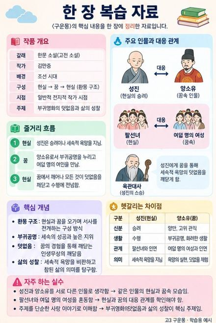
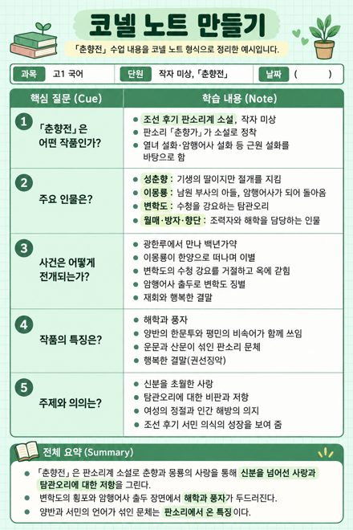
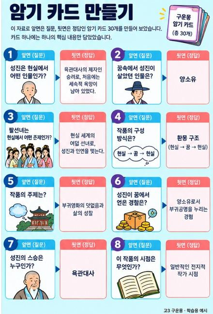
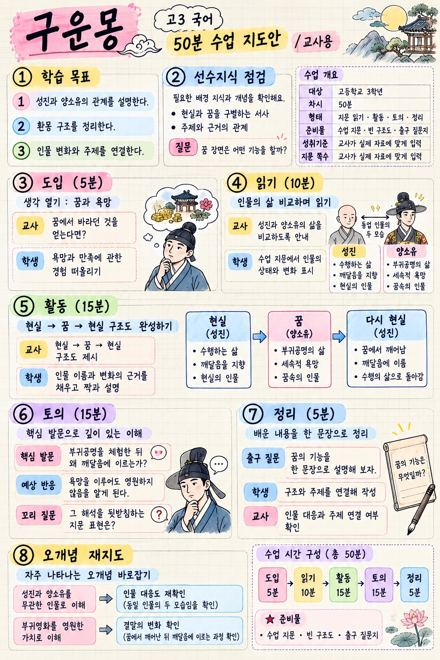

교육 요약자료,
그림 한 장 고르면 됩니다.
쌤플레이는 선생님의 강의자료와 학생의 공부 자료를 ChatGPT 이미지로 만들 때 쓰는 프롬프트 쌤플 생성 사이트입니다.
이름은 선생님을 부르는 말 ‘쌤’과 본보기라는 뜻의 ‘SAMPLE(쌤플)’을 합쳐 지었습니다. 쌤플을 고르며 노는 듯 가볍게 자료를 만들자는 뜻을 담아 쌤플레이로 출시했습니다.
마음에 드는 예시 그림을 고르고 과목과 주제만 적으면 프롬프트가 완성됩니다. 복사해서 ChatGPT에 붙여넣고, 교과서 사진이나 학습지를 함께 올리면 그 내용으로 정리된 한 장이 나옵니다.
수업 준비를 하다 보면 지도안, 학습지, 형성평가처럼 매번 비슷한 자료를 새로 만들게 됩니다. 학생도 마찬가지라서, 시험 전에는 정리 노트와 암기 카드를 또 만듭니다. ChatGPT에 이미지로 만들어 달라고 하면 빠른데, 어떻게 시켜야 원하는 모양이 나오는지가 늘 문제였습니다.
그래서 잘 나온 결과물을 쌤플로 모아 두고, 그 쌤플대로 만들어 달라는 프롬프트를 자동으로 써 주는 페이지를 만들었습니다. 선생님만이 아니라 공부하는 누구나 쓸 수 있게 학습용 쌤플도 함께 넣었습니다.
세 단계면 끝납니다
그림을 고르고, 적고, 복사합니다. 아래는 실제 화면과 같은 예시이고, 카드가 순서대로 켜집니다.


✓

[결과 형식] 고3 국어 「구운몽」 한 장 복습 자료, 세로형 고해상도…
[첨부 자료 활용] 함께 올린 자료의 내용을 정리해…
쌤플은 이렇게 생겼습니다
손글씨 노트부터 인포그래픽, 칠판, 만화, 표, 안내문과 포스터까지. 전부 쌤플레이가 만든 프롬프트로 실제 생성한 결과물입니다.
이런 분께
🍎선생님
한 차시 수업에 필요한 자료를 한 번에.
- 학습 목표, 수업 흐름, 50분 지도안
- 핵심 발문, 선수학습 진단
- 활동 학습지, 형성평가, 채점 기준표
📘공부하는 사람
정리하고, 이해하고, 외우고, 점검하는 순서 그대로.
- 한 장 복습 자료, 코넬 노트, 개념 시각화
- 쉽게 설명하기, 비유, 원리 이해
- 암기 카드, 두문자, 빈칸 문제, 예상문제